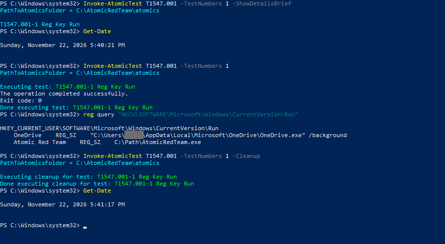
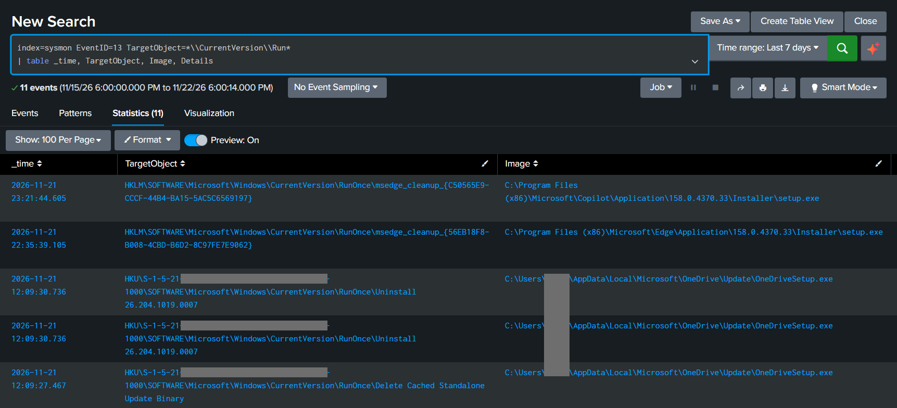

04 · Run anahtarıyla kalıcılık
...\CurrentVersion\Run, RunOnce ve RunOnceEx anahtarlarına yeni bir değer yazılması.
Saldırı
Invoke-AtomicTest T1547.001 -TestNumbers 1
reg query "HKCU\SOFTWARE\Microsoft\Windows\CurrentVersion\Run"
Invoke-AtomicTest T1547.001 -TestNumbers 1 -Cleanup
# Tekrar testi: HKLM RunOnceEx
Invoke-AtomicTest T1547.001 -TestNumbers 2Tespit (SPL)
Son sürüm
index=sysmon EventID=13 TargetObject=*\\CurrentVersion\\Run* (Image!="*\\Program Files (x86)\\Microsoft\\*\\Installer\\setup.exe")
| table _time, TargetObject, Image, DetailsFalse positive'ler ve ayıklama
Tüm Sysmon 13 olaylarına baktığımda 7 günde 2.114 olay geldi. Önce yanlış sorgu yazdığımı düşündüm. Logları kontrol edince çoğunun bilgisayardaki uygulamalardan geldiğini gördüm, en çok da OneDrive'ın sağ tık menüsü kayıtlarından. Bu yüzden sorguyu Run anahtarlarına daralttım ve 11 olay kaldı. Testin dışındakilerin hepsi RunOnce'tan geliyordu: Edge ve Copilot yükleyicileri ile OneDrive güncellemesi.
Edge ve Copilot yükleyicilerini ayıkladım. Bu programlar Program Files (x86) altında çalışıyor ve oraya yazmak yönetici yetkisi istiyor. AppData altındaki OneDriveSetup.exe'yi ise bilerek bıraktım. AppData'ya saldırgan da yazabilir. Bu programı adına göre ayıklasaydım, saldırgana saklanma yeri vermiş olurdum.
Düzeltmeler
Ayıklamayı iki kez yanlış yazdım. İlk denemede Program Files (x86)\Microsoft altındaki bütün programları dışarıda bıraktım, oysa yalnızca yükleyiciyi ayıklamam gerekiyordu. İkinci denemede iki != koşulunu AND ile bağladım. Yalnızca iki koşula birden uyan olayların dışarıda kalacağını sandım, ama sonuç tersiydi: koşullardan birine uyan her olay dışarıda kaldı ve ayıklama genişledi. Doğrusu, iki parçayı tek bir kalıpta * ile birleştirmekti: ...\Microsoft\*\Installer\setup.exe.
Ekran görüntüleri

HKCU\...\Run altına var olmayan bir dosya yazılıyor.

Run* ile 11 olay: Edge/Copilot yükleyicisi ve OneDrive güncellemesi.
AppData'daki OneDriveSetup bilerek bırakıldı.Test kanıtı
| Test | Zaman (VM saati) | Sonuç |
|---|---|---|
| T1547.001-1 | 2026-11-22 17:40 | HKCU\...\Run, yakalandı |
| T1547.001-2 | 2026-11-22 18:24 | HKLM\...\RunOnceEx, yakalandı |
Çıkarılan ders
Sorguyu yazarken bilgisayarın kendi uygulamalarının da log ürettiğini düşünmem gerekiyor. 2.114 olayın neredeyse hepsi OneDrive, Edge gibi normal programlardan geliyordu. Ama bir programı ayıklarken de dikkatli olmak lazım: yalnızca saldırganın taklit edemeyeceği bir özelliğe göre ayıklamalıyım.
Tüm ayrıntılar (veri kaynakları, sınırlamalar, analistin sonraki adımları): detections/04-run-anahtari-kalicilik.md